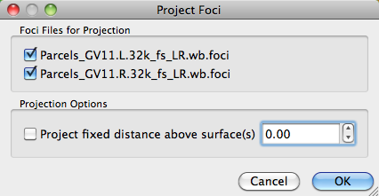

Data Menu
- Project Foci allows the user to
project foci a fixed distance above or below the volume
interaction surface. Any offset of the foci from the surface
is NOT preserved.
- Split Multi-Structure Border Files
Older border files may contain borders for more than one
surface structure. This menu item allows the user split the
old border file into single structure border files.
